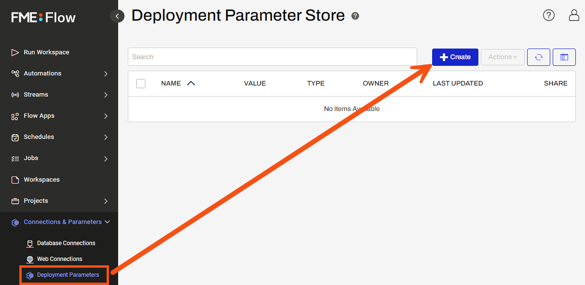
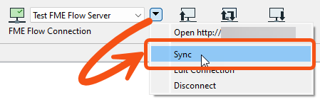
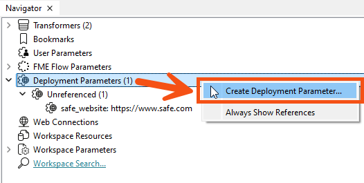
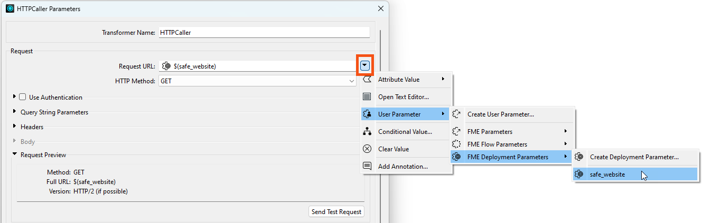
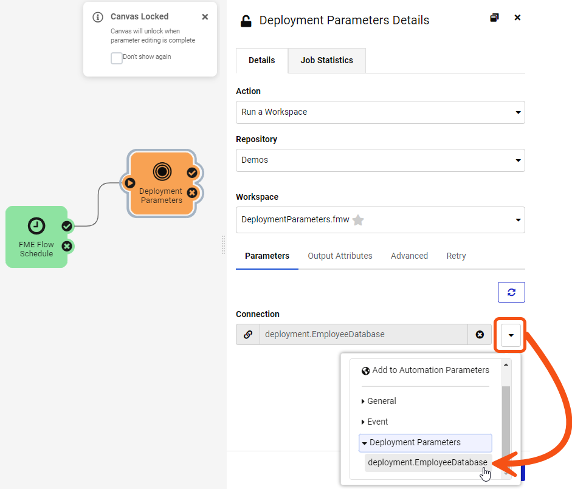
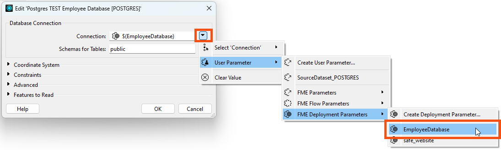

Learning Objectives
After completing this lesson, you’ll be able to:
- Explain the purpose of Deployment Parameters in FME Flow.
- Locate and create Deployment Parameters.
- Know the types of values Deployment Parameters can hold.
- Describe how Deployment Parameters can help address connection management challenges across multiple FME Flow instances.
What are Deployment Parameters?
Organizations may have multiple FME Flow instances to support the development and testing of workflows. This introduces a challenge, as database and web connections are also likely to be different between instances. Manually changing all connections in a workspace for the environment it is being run in is time-consuming and error-prone.
This challenge can be addressed with Deployment Parameters. Deployment Parameters allow you to use a common name for a parameter across all FME Flow instances while giving it a different value in each instance. When a workspace that references a Deployment Parameter is published to FME Flow, it will use the value stored on that instance.
Creating Deployment Parameters
There are currently three different types of Deployment Parameters that you can create: database connection, web connection, and text.
Deployment Parameters can be created from the FME Flow Web UI or FME Workbench. Once created, Deployment Parameters will reside in the Deployment Parameter Store on FME Flow.
To create a Deployment Parameter from the FME Flow Web UI, go to Connections & Parameters. Click Deployment Parameters to view the Deployment Parameter Store page and then click Create.

To create a Deployment Parameter from FME Workbench, you must be connected and synchronized to the FME Flow instance where you want the Deployment Parameter to exist. There must also be at least one Deployment Parameter already on the connected FME Flow instance.

You will then see Deployment Parameters in the FME Workbench Navigator panel and can right-click to create additional deployment parameters.

After you create a Deployment Parameter in FME Workbench, it will be added to the Deployment Parameter store in the connected FME Flow instance.
Using Deployment Parameters in FME Workbench
You can select a Deployment Parameter as a value in the same way as a User Parameter or FME Flow Parameter by expanding the User Parameter menu.

If the connected FME Flow instance has a new Deployment Parameter since you last synced in FME Workbench, it will not be available for selection until you sync again.

When you sync to FME Flow from FME Workbench, FME does not synchronize the connection settings for web and database connection deployment parameters. To run a workspace in FME Workbench that references a web connection or database connection deployment parameter, you must have already defined the connection in Tools > FME Options.
Using Deployment Parameters in FME Flow Automations
You can also use Deployment Parameters in FME Flow Automation actions. For example, in the Run Workspace action, you can choose a Deployment Parameter as a connection parameter value.

Example: Author a Workspace With a Database Connection using Deployment Parameters
Let’s say an organization has two different FME Flow instances: a test instance and a production instance. They also have two Postgres employee databases, one for test and one for production. The workspace author wants the same workspace to run in both FME Flow instances without changing the connection parameters in FME Workbench.
To accomplish this, they can create a Deployment Parameter named ‘Employee Database’ on each FME Flow instance and give it a different connection value on each instance.
Here is the FME Flow test instance:

And here is the production instance. Notice that the Deployment Parameter name is the same, but the value is different:

In FME Workbench, the author has already created a database connection for each environment.

They can use the EmployeeDatabase Deployment Parameter in FME Workbench by connecting to either FME Flow instance. In this example, they'll connect to the test server. In FME Workbench, from the drop-down list next to the FME Flow Connection, they choose Sync to ensure their Deployment Parameters are up-to-date .

In the Postgres reader, instead of choosing the name of a database connection, they choose the EmployeeDatabase Deployment Parameter.

Since FME Workbench is currently connected to the FME Flow test server, the EmployeeDatabase Deployment Parameter will use the Postgres TEST Employee Database connection.
Now the author can run the workspace from FME Workbench using the test database connection and then publish it to the FME Flow test server. When testing is complete, they can publish the workspace to the FME Flow production server without any changes being made to the workspace.